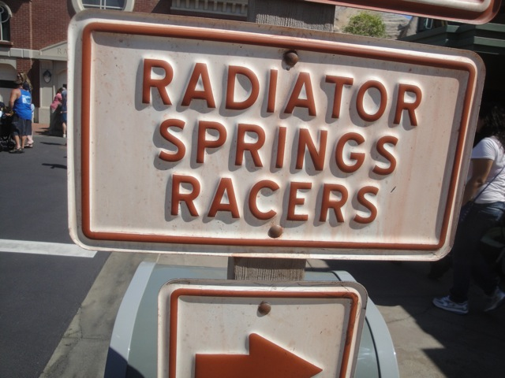
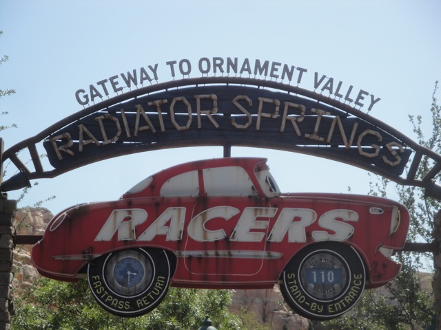
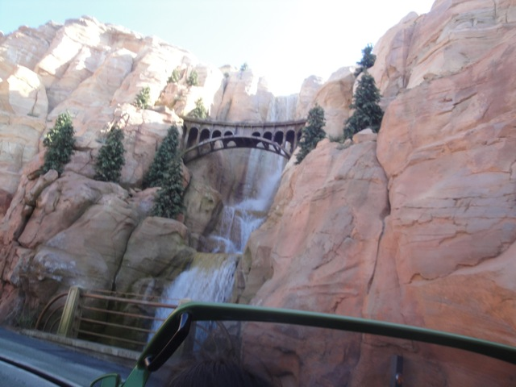
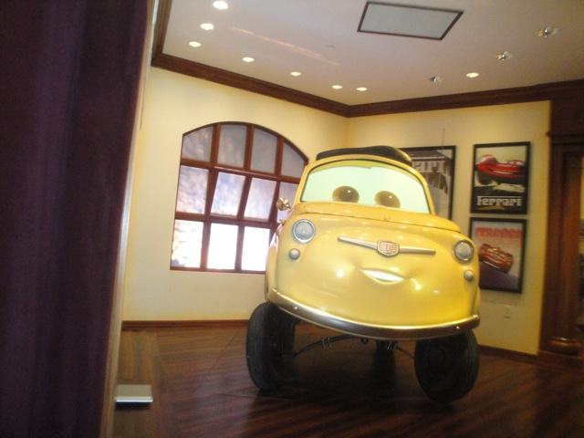
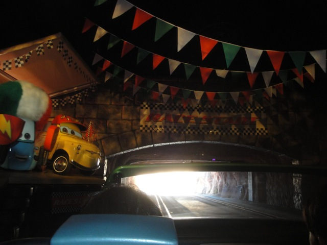
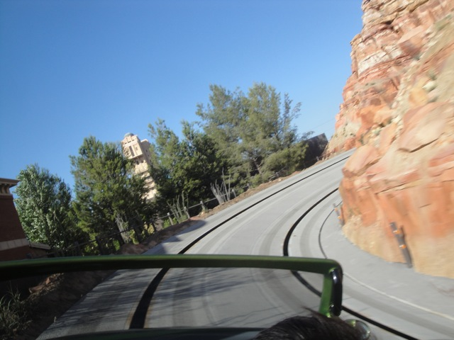

Disneyland Summer 2012
All right. While I was in Europe, California Adventure finally decided to open up Carsland, and at that point, I just knew I had to come here this summer to go and check it out. And here you can see their totally redone entrane. HOLY CRAP!!!! It looks NICE!!!!
Why again are we here?
I must say, just from walking around here, I am really impresed with this new area.
I may not be a big fan of Cars as its by far my least favorite Pixar Movie, but this is a great area.
Yeah. They just have Mater driving all around Carsland. I hope he's getting a good salary for all the advertising he's doing for the park.

All right Radiator Springs Racers. We'll come back for you MANY hours later.
 Ok. Lets focus on the rest of California Adventure. So here's California Screamin.
Ok. Lets focus on the rest of California Adventure. So here's California Screamin.
Thats a big plus about Carsland right there. Shorter lines for everything else.
Hey. I always make faces like this on coasters like this.
 DUEL!!!!!!!!!!
DUEL!!!!!!!!!!
Ooh. It appears that they're using the World of Color technology to have random water shows in the middle of the day. I like this. =)
Hey. Toy Story Mania is a really fun ride. Lets take a spin on that.
Damn you Ring Game!!! My score would be much higher if it weren't for you!!!
Hell no!!!! Not worth it!!!

All right!!! Time for us to get on Radiator Springs!!!

Love the theming on this ride.

Come on everyone!!! Lets all drive to the Mushroom Kingdom!!! Oops, wrong Luigi.

"All right!!! Time to race!!! Yeah, you never trained, but hey. You're a pro at doing things at the last minute!!!"

Yeah. This ride is awesome. Its not as good as Test Track or Spiderman, but that doesn't mean that its not one of my favorite dark rides.
For those of you wondering, yes. The trolley really does work.
"No Kevin. I'm not going to drop my chicken skewer in my lap like last time."
In the bad news though, Indiana Jones was HORRIBLE tonight. Many of the effects weren't working and the sound was spotty to the point where it seemed more like the audio on X2. =(
 And hey. Matterhorn is done with its rehab!!! Lets go see what all's changed.
And hey. Matterhorn is done with its rehab!!! Lets go see what all's changed.
Ooh. I see that they changed the cars.
 I honestly prefered the old cars to these ones. But hey. Its still Matterhorn, which is still a fun ride.
I honestly prefered the old cars to these ones. But hey. Its still Matterhorn, which is still a fun ride.
Ooh. Pretty Fireworks.
 And to top off the night, we got stuck at the end of Space Mountain!!!!
And to top off the night, we got stuck at the end of Space Mountain!!!!
Ooh. Take a look at the not working lights.
 Hey everyone!!! We're stuck on Space Mountain too!!!!
Hey everyone!!! We're stuck on Space Mountain too!!!!
Oh, and for the two people behind me, here's a little message from me to you. "SHUT THE F*CK UP!!!!! SHUT UP!!! STOP SCREAMING BEFORE I STRANGLE YOU!!!!!! YOU'RE RUINING MY PEACEFUL RIDE ON SPACE MOUNTAIN YOU ASSHATS!!!!"
Home